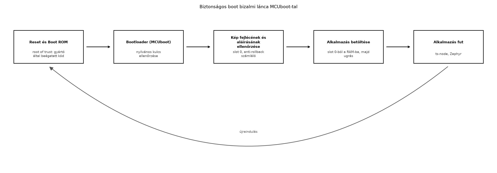

A TerraSense üvegház-monitorozó rendszerben a ts-node
eszközök a kihelyezés után fizikailag elérhetők lehetnek illetéktelen
személyek számára. Ha a firmware-t védő mechanizmus nélkül bárki
lecserélheti a flash tartalmát, a támadó saját kódot futtathat az
eszközön: hamis telemetriát küldhet, öntözőszelepet nyithat, vagy
további hálózati támadást indíthat. A biztonságos boot (secure boot)
elsődleges célja, hogy csak olyan firmware induljon el, amelyet a gyártó
vagy az üzemeltető aláírt, és amelyet azóta nem módosítottak. Ez a
biztosíték az eszköz teljes szoftveres életciklusának alapja, a
gyártástól az OTA-frissítésig.
Definíció. A bizalmi lánc (chain of trust) olyan réteges ellenőrzési sorozat, amelyben minden indítási lépés hitelesíti a következőt. A lánc kiindulópontja a gyökér bizalmi pont (root of trust, RoT): egy hardveres vagy gyártás során beégetett komponens, amelyet támadó nem tud módosítani. Az RoT általában egy boot ROM-ban tárolt elsőfokozatú betöltő, amely a második fokozatú betöltő (bootloader) aláírását ellenőrzi, majd a bootloader ellenőrzi az alkalmazás firmware-képét.
A Zephyr ökoszisztémában az ajánlott nyílt forrású bootloader az
MCUboot. Az MCUboot két flash-területet, úgynevezett
slotot használ: a slot 0 az aktív
alkalmazáskép, a slot 1 pedig a csere- vagy frissítési kép
helye. A bootloader induláskor ellenőrzi a slot 0-ban lévő
kép aláírását, és ha érvényes, átadja a vezérlést az alkalmazásnak. Ha a
slot 1-ben újabb, érvényes kép van, a bootloader
kicserélheti a slotokat, majd elindítja az új verziót.
Definíció. Az anti-rollback
(visszagörgetés elleni védelem) olyan mechanizmus, amely megakadályozza,
hogy egy támadó egy régebbi, ismert hibákat tartalmazó, de érvényes
aláírással rendelkező firmware-t töltsön vissza az eszközre. Az MCUboot
a képen belül egy védett TLV-ben (IMAGE_TLV_SEC_CNT)
hordozza a biztonsági számlálót (security counter), és ezt a bootloader
egy megbízható, monoton számlálóhoz hasonlítja. A megbízható számláló
platformfüggő: lehet OTP/fuse, védett flash, illetve secure element; a
bootloader oldalán a
CONFIG_MCUBOOT_HW_DOWNGRADE_PREVENTION=y kapcsolja be.
Hardveres számláló nélkül a
CONFIG_MCUBOOT_DOWNGRADE_PREVENTION=y csak a verziószámot
kényszeríti monotonra, ami nem véd meg minden visszajátszástól. A
számláló értékét az aláíró eszköz
(imgtool sign --security-counter ..., illetve
west sign esetén --security-counter auto)
állítja, és a frissítési folyamatnak gondoskodnia kell annak
növeléséről.
A firmware-kép formátuma MCUboot esetén a következő fő részekből áll (a slot elejétől a vége felé):
hdr_size, protect_tlv_size,
img_size, flag-ek és verzió. A slot elején áll; utána a
--header-size értékéig (például 0x200) nullázott padding
következik. Fontos: a --header-size nem a fejléc mérete,
hanem az alkalmazás kezdő offsetje a sloton belül, hogy a vektorok a
bootloader által várt helyre kerüljenek.header_size offset után.IMAGE_TLV_SIGNATURE;
ECDSA P-256 esetén 64 B nyers aláírás plusz TLV-fejléc) és a biztonsági
számlálót (IMAGE_TLV_SEC_CNT) tartalmazza. A bootloader ezt
a területet a képfejléc protect_tlv_size mezője alapján
találja meg, és az aláírással együtt ellenőrzi.BOOT_MAX_ALIGN értékétől és a
választott swap módtól függ (boot_trailer_sz()), ezért nem
elég a fejléc és az aláírás méretével számolni.A bootfolyamat a következő ábrán látható:

A boot ROM a gyártó által zárt, nem módosítható kód; a bootloader a flash egy elkülönített területén tárolt, szintén aláírt kép. Az ellenőrzéshez a bootloader a flash-be égetett vagy hardveresen védett nyilvános kulcsot használ, így a támadó nem cserélheti a kulcsot a bootloader módosítása nélkül, ami viszont aláírás-ellenőrzéshez kötött.
A firmware-aláírás folyamata az imgtool parancssori
eszközzel történik, amely az MCUboot referencia-implementációjának
része. A gyártó generál egy privát/publikus kulcspárt (általában ECDSA
P-256), a privát kulcsot biztonságos helyen tárolja, a nyilvános kulcsot
pedig a bootloaderrel együtt beégeti a flash-be. Az alkalmazás
lefordított binárisát az imgtool sign paranccsal írja alá,
amely hozzáfűzi a fejlécet, a TLV-ket és az aláírást.
A biztonságos boot bevezetésekor több tervezési döntést kell meghozni, amelyek befolyásolják a biztonsági szintet, a költséget és a bonyolultságot.
| Szempont | Lehetséges megoldások | Előnyök | Hátrányok |
|---|---|---|---|
| Root of trust típusa | Szoftveres (flash-ben tárolt elsőfokozat) | Olcsó, könnyen frissíthető | Támadó által módosítható, ha nincs hardveres védelem |
| Hardveres (ROM, Secure Element, TPM) | Magas biztonság, nem módosítható | Drágább, gyártói kötöttség | |
| Aláírási algoritmus | ECDSA P-256 (MCUboot alapértelmezett) | Kis kulcs, gyors ellenőrzés, szabványos | Implementációt igényel a bootloaderben |
| RSA (nagyobb kulcs) | Széles körben elterjedt | Nagyobb aláírás, lassabb ellenőrzés | |
| Anti-rollback | Security counter + hardveres tárolás | Megakadályozza a régi sebezhető verziók visszatöltését | Hardveres támogatás kell, a számláló növelése visszafordíthatatlan |
| Nincs anti-rollback | Egyszerűbb | Régi verzió visszatölthető, ha a támadó rendelkezik régi érvényes képpel | |
| Kulcstárolás | Bootloaderbe égetett nyilvános kulcs | Egyszerű, nem igényel külön hardvert | Kulcscsere nehéz (firmware frissítést igényel) |
| Secure Element (pl. ATECC608) | Kulcs fizikailag védett | Extra komponens, költség |
A TerraSense ts-node eszközöknél a cél a jó ár-érték
arány: kisméretű, olcsó MCU-kon a szoftveres RoT és a flash-be égetett
nyilvános kulcs elegendő, ha az eszköz fizikai védelme korlátozott, de a
támadási felületet elfogadják. Amennyiben az eszköz kritikus
infrastruktúrához kapcsolódik, hardveres Secure Element javasolt.
A labor célja egy valóban MCUboot-kompatibilis, aláírt kép
előállítása a ts-node firmware-ből, a bootloader és az
alkalmazás együttes, sysbuild-es buildjével. A native_sim
boardon MCUboot nem fut, ezért a bootfolyamat ellenőrzése valós hardvert
(nRF52840 DK) igényel; a build, a partíciók, a védett TLV-k és az
aláírás hoston is előállíthatók és vizsgálhatók. A lépések a Zephyr
3.7.0 LTS west környezetében futnak; az imgtool 2.1.0
verziója a verziómátrix része.
Munkakönyvtár:
mkdir -p ~/iot-labor/i058 && cd ~/iot-labor/i0581. lépés: Az imgtool telepítése
python3 -m pip install --user imgtool==2.1.02. lépés: Aláíró kulcspár generálása
imgtool keygen --key signing-key.pem --type ecdsa-p256A signing-key.pem privát kulcsot a gyártás során védett
környezetben kell tartani; a belőle származó nyilvános kulcs kerül a
bootloaderbe. A sysbuild a
SB_CONFIG_BOOT_SIGNATURE_KEY_FILE beállításon keresztül
kapja meg ugyanezt a kulcsot, ezért a bootloader és az alkalmazás
aláírása ugyanazzal a kulccsal történik.
3. lépés: Az alkalmazás és a sysbuild konfigurációja
A gyakorlathoz minimális Zephyr alkalmazást készítünk, amely a firmware verzióját naplózza.
CMakeLists.txt:
cmake_minimum_required(VERSION 3.20)
find_package(Zephyr REQUIRED HINTS $ENV{ZEPHYR_BASE})
project(ts_secure_boot_lab)
target_sources(app PRIVATE src/main.c)prj.conf:
CONFIG_BOOTLOADER_MCUBOOT=y
CONFIG_LOG=y
CONFIG_MAIN_STACK_SIZE=2048src/main.c:
#include <zephyr/kernel.h>
#include <zephyr/logging/log.h>
LOG_MODULE_REGISTER(i058, LOG_LEVEL_INF);
int main(void)
{
LOG_INF("Signed image running, version 1.0.0");
while (1) {
k_sleep(K_SECONDS(1));
}
}A CONFIG_BOOTLOADER_MCUBOOT=y az alkalmazás oldalán a
slot0-ra és a header offsetre vonatkozó linkerbeállítást választja; a
bootloader maga külön image, amelyet a sysbuild épít. A
CMakeLists.txt gyökerében hozzuk létre a
sysbuild.conf és a sysbuild/mcuboot.conf
fájlokat:
# sysbuild.conf – a bootloader és az alkalmazás közös sysbuild-beállításai
SB_CONFIG_BOOTLOADER_MCUBOOT=y
SB_CONFIG_BOOT_SIGNATURE_TYPE_ECDSA_P256=y# sysbuild/mcuboot.conf – kizárólag az MCUboot image Kconfigja
CONFIG_MCUBOOT_DOWNGRADE_PREVENTION=y
CONFIG_MCUBOOT_HW_DOWNGRADE_PREVENTION=yA CONFIG_MCUBOOT_HW_DOWNGRADE_PREVENTION a platform
megbízható, monoton számlálóját használja; a
CONFIG_MCUBOOT_DOWNGRADE_PREVENTION emellett a verziószám
monotonitását is kikényszeríti. Hardveres számláló nélkül az utóbbi csak
részleges védelmet ad, ezért a gyártásnak gondoskodnia kell a számláló
inicializálásáról és növeléséről.
4. lépés: Sysbuild-es build
A kulcs abszolút útvonalát a parancssorban adjuk meg, mert a Kconfig string nem számol shell-változóval:
west build --sysbuild -b nrf52840dk/nrf52840 -d build \
-DSB_CONFIG_BOOT_SIGNATURE_KEY_FILE="$PWD/signing-key.pem"A sysbuild a következő kimeneteket állítja elő:
build/mcuboot/zephyr/zephyr.bin # a bootloader képe
build/ts_secure_boot_lab/zephyr/zephyr.bin # az aláíratlan alkalmazás
build/ts_secure_boot_lab/zephyr/zephyr.signed.bin # a sysbuild által aláírt kép
build/ts_secure_boot_lab/partitions.yml # slotok, címek, méretekA partitions.yml az egyetlen hiteles forrás a
slot0_partition méretére és a
header-size/offset értékére; a kézi
imgtool sign parancsba ezeket kell behelyettesíteni, nem
beégetett konstansokat.
5. lépés: A kép és a TLV-k ellenőrzése
imgtool verify --key signing-key.pem \
build/ts_secure_boot_lab/zephyr/zephyr.signed.bin
imgtool dumpinfo build/ts_secure_boot_lab/zephyr/zephyr.signed.binVárt kimenet (illusztratív):
Image version: 1.0.0
Signature valid.Az imgtool dumpinfo mutatja a 32 bájtos képfejlécet, a
védett TLV-ket (SHA-256, kulcs-hash, aláírás, security counter) és a
swap trailer jelenlétét. A zephyr.signed.bin mérete nem
alkalmazás + 512 B + 64 B: a védett TLV-k és a swap trailer
is helyet foglalnak, ezért a slotméretet a partitions.yml
és a tényleges signed kép mérete alapján kell ellenőrizni.
6. lépés: A sign.sh szkript elkészítése
A későbbi OTA-frissítéshez (OTA-frissítés: A/B
képek, rollback, delta, fokozatos kiadás) automatizáljuk az
aláírást. A szkript a west sign parancsot használja, amely
a build konfigurációjából és a partitions.yml-ből olvassa a
header- és slotméretet, ezért nincs beégetett érték:
#!/usr/bin/env bash
set -euo pipefail
BUILD_DIR="${1:?build dir}"
VERSION="${2:?version}"
SECURITY_COUNTER="${3:-auto}"
west sign -t imgtool -d "${BUILD_DIR}" -- \
--key signing-key.pem \
--version "${VERSION}" \
--security-counter "${SECURITY_COUNTER}"chmod +x sign.sh
./sign.sh build/ts_secure_boot_lab 1.0.0 autoA west sign a zephyr.bin-ből
zephyr.signed.bin-t készít, és a
--security-counter auto az imgtool által a verzióból
származtatott számlálót használja. Közvetlen imgtool sign
csak akkor indokolt, ha a paramétereket a build fájljaiból vezetjük le,
például:
SLOT_SIZE=$(awk '/slot0_partition:/{f=1} f && /size:/{print $2; exit}' \
build/ts_secure_boot_lab/partitions.yml)
HEADER_SIZE=$(awk -F= '/^CONFIG_ROM_START_OFFSET=/{print $2}' \
build/ts_secure_boot_lab/zephyr/.config)
imgtool sign --key signing-key.pem --header-size "${HEADER_SIZE}" \
--align 8 --version 1.0.0 --slot-size "${SLOT_SIZE}" \
--pad-header --security-counter auto \
build/ts_secure_boot_lab/zephyr/zephyr.bin signed.bin7. lépés: Flash-elés és bootpróba valós hardveren
A sysbuild-es buildből a west flash -d build a
bootloadert és az alkalmazást együtt tölti fel az nRF52840 DK-ra. A
bootloader a soros konzolon naplózza az ellenőrzés eredményét; sikeres
ellenőrzés után az alkalmazás Signed image running üzenete
jelenik meg. Ez a lépés valós hardvert igényel, ezért a labor
környezetében külön végrehajtandó.
8. lépés: Negatív tesztek a valódi bootláncon
A hostoldali imgtool verify nem helyettesíti a
bootloader döntését. A következő negatív teszteket a céleszközön kell
elvégezni; a várt eredmény mindegyiknél az, hogy a bootloader nem
indítja el a hibás képet, és a korábbi jó kép marad aktív:
zephyr.signed.bin egy payload-bájtját megváltoztatjuk, majd
a slot1-be töltjük (például mcumgr-ral) és frissítést kérünk. Az
imgtool verify már hoston elbukik; a bootloader a védett
TLV hash- vagy aláírás-ellenőrzésén bukik el, és nem vált.other-key.pem) írjuk alá. A bootloader a beégetett
nyilvános kulccsal ellenőriz, ezért elutasítja; a slot0 továbbra is a
régi képet indítja.--security-counter 2 értékkel, majd v1.0.0-t
--security-counter 1 értékkel töltünk fel. A
CONFIG_MCUBOOT_HW_DOWNGRADE_PREVENTION miatt a régi
számlálójú kép nem indul el.A tesztek pontos kimenete a board és az MCUboot verziójától függ; a
labor a naplóban megjelenő elutasítási okot (signature,
security counter, swap) rögzíti. A fejezet nem
állítja, hogy ezeket a hardveres teszteket elvégezte: a build és az
aláírás statikusan ellenőrzött, a bootlánc-próbák a labor feladata.
A labor során az alábbi parancsokkal győződhetünk meg a folyamat helyességéről:
imgtool verify --key signing-key.pem signed.bin –
ellenőrzi az aláírást és kiírja a verziót;imgtool dumpinfo signed.bin – megjeleníti a képfejléc
mezőit (méret, verzió, security counter);grep "version" signed.bin – binárisban nem célszerű,
helyette az imgtool dumpinfo használata javasolt.Tipikus hibák és javításuk:
| Tünet | Lehetséges ok | Javítás |
|---|---|---|
imgtool verify hibát jelez: signature invalid |
A nyilvános kulcs nem egyezik az aláíró privát kulccsal, vagy a kép sérült | Ellenőrizze, hogy a --key paraméter ugyanazt a kulcsot
használja, mint amellyel aláírták; próbálja újra az aláírást |
imgtool sign hibát jelez: header size mismatch |
A --header-size nem egyezik a build által használt
alkalmazás-offsettel |
A --header-size nem a 32 B-os képfejléc mérete, hanem
az alkalmazás kezdő offsetje; a west sign ezt a build
konfigurációjából olvassa. Kézi híváskor a partitions.yml
és a CONFIG_ROM_START_OFFSET értékét kell használni, nem
beégetett 0x200-at |
| A bootloader nem indul a valós hardveren | A bootloader nincs a flash elejére írva, vagy a slot 0
kezdőcíme rossz |
Ellenőrizze a linker szkriptet és a partíciós táblát; a
west flash parancsnak a bootloadert és az alkalmazást
együtt kell felírnia |
| Az alkalmazás nem indul a bootloader után | Az aláírt kép nem a slot 0-ba került, vagy a kép mérete
meghaladja a slot méretét |
Ellenőrizze a --slot-size értékét és a tényleges
partíciós táblát |
| A fejlesztői debug port aktív | A felszabadított eszközön a debug interfész (SWD, JTAG) engedélyezett, ami a flash tartalmának módosítását teszi lehetővé | Gyártáskor zárja le a debug portot (például biztosítékokkal vagy flash-olvasásvédelemmel), ahogyan a következő szakaszban tárgyaljuk |
A biztonságos boot önmagában nem elegendő, ha a támadó közvetlenül a debug interfészen keresztül tudja a flash tartalmát olvasni vagy módosítani. A legtöbb MCU lehetőséget kínál a debug hozzáférés korlátozására:
Ezek a beállítások a gyártás során alkalmazandók, mert utólag gyakran
nem vagy csak korlátozottan módosíthatók. A fejlesztői példányokon a
debug port nyitva marad a teszteléshez, de a gyártási folyamatba be kell
építeni a lezárást. A TerraSense esetében a ts-node
eszközök gyártási konfigurációjában dokumentálni kell ezeket a
lépéseket.
--header-size
összekeverése. A képfejléc 32 B; a --header-size
(például 0x200) az alkalmazás offsetje a sloton belül, benne a fejléccel
és a paddinggel. A védett TLV-k az alkalmazáskép után helyezkednek el,
az aláírás nem a fejlécben van, hanem a védett TLV területen.Magyarázza el, mi a különbség a root of trust és a bootloader között a biztonságos boot folyamatában. Miért nem elegendő a bootloader aláírása, ha a root of trust nem hardveres?
Egy Zephyr alkalmazás lefordított mérete 128 KiB. A slot elején a
képfejléc 32 B, a --header-size (az alkalmazás offsetje)
0x200, a védett TLV terület SHA-256 hash-t, kulcs-hash-t, 64 B ECDSA
P-256 aláírást és 4 B security countert tartalmaz TLV-fejlécekkel, a
swap trailer pedig a szektorok számától függ. Mekkora legalább a
slot 0 mérete, ha a flash programozási egysége 8 B, a slot
mérete 0x76000 B, a szektor mérete 4 KiB? Mutassa meg, miért nem elég a
64 B aláírást a fejlécméretbe beszámítani.
Készítse el a sign.sh szkriptet a laborban leírtak
szerint, majd futtassa le egy v1.0.0 verziójú aláírt képre,
és ellenőrizze az imgtool verify parancs kimenetét. Ez a
szkript lesz a továbbvitt eredmény az OTA-frissítés:
A/B képek, rollback, delta, fokozatos kiadás alfejezethez.
Módosítsa a sign.sh-t úgy, hogy egy másik kulccsal
próbálja ellenőrizni az aláírt képet. Mi történik, és milyen hibatünetet
tapasztal? Írja le, hogyan lehetne ezt a hibát a gyártási folyamatban
automatikusan észlelni.
A root of trust (RoT) a bizalmi lánc első láncszeme, amelynek hitelességét fizikai vagy gyártási garancia biztosítja; ez jellemzően egy gyártó által beégetett boot ROM kód. A bootloader egy második fokozatú betöltő, amelyet az RoT ellenőriz, majd a bootloader ellenőrzi az alkalmazást. Ha az RoT szoftveres (pl. flash-ben tárolt), a támadó módosíthatja azt, és így a teljes ellenőrzési lánc megkerülhető. Hardveres RoT esetén ez nem lehetséges, mert a kód fizikailag nem módosítható.
A szükséges hely nem alkalmazás + 512 B + 64 B. A helyes
bontás:
--header-size 0x200 = 512 B (a 32 B képfejléc és a
hozzá tartozó padding);boot_trailer_sz() és a partitions.yml
adja.A minimális slotméret tehát 131072 + 512 + 152 + 1472 = 133208 B, 8
B-hez igazítva 133208 B. A 0x76000 B (483328 B) slot bőven elég; egy 128
KiB-os slot viszont nem férne el. A 64 B csak a nyers ECDSA-aláírás, a
TLV-fejlécek, a többi TLV és a swap trailer miatt a tényleges többlet
másfél KiB nagyságrendű. A végleges ellenőrzés mindig a
partitions.yml és a west sign által
előállított zephyr.signed.bin méretének összevetése.
A sign.sh tartalmát a labor részben megadtuk.
Futtatás:
./sign.sh build/ts_secure_boot_lab 1.0.0 auto
imgtool verify --key signing-key.pem \
build/ts_secure_boot_lab/zephyr/zephyr.signed.binVárt kimenet:
Image version: 1.0.0
Signature valid.A szkript a signing-key.pem privát kulcsot használja, a
west sign pedig a header- és slotméretet a build
konfigurációjából és a partitions.yml-ből olvassa, ezért
nincs beégetett boardparaméter. A kimenet a
zephyr.signed.bin; az OTA-frissítés:
A/B képek, rollback, delta, fokozatos kiadás OTA-frissítés során
ugyanezt a szkriptet hívjuk meg az új verzióval és növelt security
counterrel.
Generáljunk egy másik kulcsot:
imgtool keygen --key other-key.pem --type ecdsa-p256
imgtool verify --key other-key.pem signed.binVárt kimenet: hibaüzenet, például Signature invalid vagy
hasonló, mert a nyilvános kulcs nem egyezik az aláíró privát kulccsal. A
gyártási folyamatban ezt úgy lehet automatikusan észlelni, hogy a CI/CD
pipeline az aláírás után azonnal lefuttatja az
imgtool verify parancsot a hivatalos nyilvános kulccsal, és
csak akkor engedi kiadni a firmware-t, ha a kilépési kód 0. A hostoldali
verify azonban csak a fájl ellenőrzése: a valódi bootlánc-tesztet a 8.
lépés írja le (hibás aláírású kép a slot1-ben, amit maga az MCUboot
utasít el). A bootloader a beégetett nyilvános kulccsal ellenőriz, és
hibás kulcs esetén nem indítja el az alkalmazást.
A biztonságos boot a bizalmi lánc elvén alapul: a root of trust
ellenőrzi a bootloadert, a bootloader pedig az alkalmazás aláírását. Az
MCUboot a Zephyr ajánlott bootloadere, két slotot (slot 0,
slot 1) használ; az aláírás és a security counter a kép
utáni védett TLV területen van, nem a 32 bájtos képfejlécben. Az
anti-rollback a platform megbízható, monoton számlálójával
(CONFIG_MCUBOOT_HW_DOWNGRADE_PREVENTION) akadályozza meg a
régebbi, sebezhető verziók visszatöltését. A debug portok lezárása és a
flash-olvasásvédelem a fizikai támadások ellen véd. Továbbvitt
eredmények: a ~/iot-labor/i058/ könyvtárban
létrehozott signing-key.pem privát kulcs és a futtatható
sign.sh szkript, amely a west sign parancsot
használja, és a header-/slotméretet a build konfigurációjából és a
partitions.yml-ből olvassa. A szkript ugyanazt a kulcsot és
slot-beállításokat használja, és az OTA-frissítés:
A/B képek, rollback, delta, fokozatos kiadás alfejezetben az új
firmware verziók aláírására fog szolgálni.
CONFIG_BOOTLOADER_MCUBOOT és a bootloader
integráció)Ellenőrzési igény: az imgtool==2.1.0 és a hozzá tartozó
west sign viselkedése, valamint a
--header-size/--slot-size konkrét értékei
boardról boardra és MCUboot-verziónként változnak, ezért a
partitions.yml és a build config az irányadó. A
SB_CONFIG_BOOTLOADER_MCUBOOT,
SB_CONFIG_BOOT_SIGNATURE_TYPE_ECDSA_P256,
SB_CONFIG_BOOT_SIGNATURE_KEY_FILE,
CONFIG_MCUBOOT_DOWNGRADE_PREVENTION és
CONFIG_MCUBOOT_HW_DOWNGRADE_PREVENTION nevek a Zephyr
3.7.0/MCUboot 2.1.0 párban érvényesek; a hardveres bootlánc-tesztek az
nRF52840 DK-n végrehajtandók. A debug port lezárására és
flash-olvasásvédelemre vonatkozó beállítások gyártó- és
MCU-specifikusak.